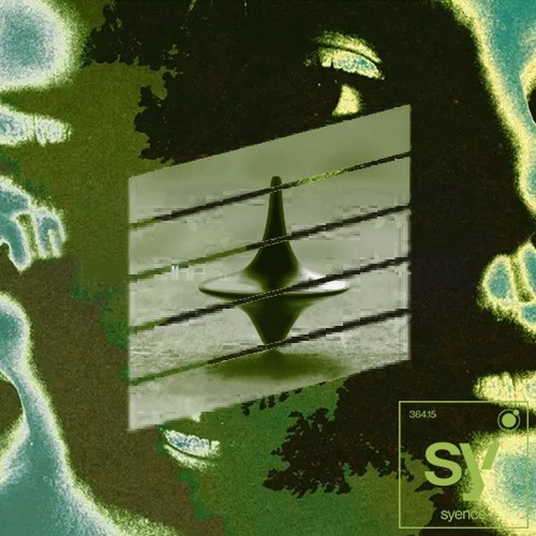

← Tutte le puntate
Crossover #167.
Data di uscita Il radioshow
Dove
Radio WowFM, Emilia-Romagna · il lunedì alle 14
Radio Super SoundFM, Sardegna · il sabato
Stardust Radioweb
I 24 dischi
 1
Hey PapiThomas Anthony & Control Room
1
Hey PapiThomas Anthony & Control Room
 2
TinaVintage Culture
2
TinaVintage Culture
 3
Dom Dom Yes YesTimmy Trumpet & R3hab
3
Dom Dom Yes YesTimmy Trumpet & R3hab
 4
The KeysFrank Nitty
4
The KeysFrank Nitty
 5
OyeDeorro & Poncho De Nigris
5
OyeDeorro & Poncho De Nigris
 6
Love Nor MoneyD.O.D
6
Love Nor MoneyD.O.D
 7
SoberShip Wrek
7
SoberShip Wrek
 8
Green Washer (Tony Romera Remix)Joachim Pastor
8
Green Washer (Tony Romera Remix)Joachim Pastor
 9
NirvanaPhil The Beat
9
NirvanaPhil The Beat
 10
Self ControlLørd
10
Self ControlLørd
 11
What You GotNitti x Valentino Khan
11
What You GotNitti x Valentino Khan
 12
Qué Tengo Que Hacer (Kay x DJ Lauren x Scar Remix)Daddy Yankee
12
Qué Tengo Que Hacer (Kay x DJ Lauren x Scar Remix)Daddy Yankee
 13
Coke & RumHäwk & Charlie Ray
13
Coke & RumHäwk & Charlie Ray
 14
TomaloNausica
14
TomaloNausica
 15
LadyJames Hurr & Mark Knight
15
LadyJames Hurr & Mark Knight
 16
Eat SleepKX5
16
Eat SleepKX5
 17
Move This GrooveGabriel Rocha, DJ PP
17
Move This GrooveGabriel Rocha, DJ PP
 18
Players (David Guetta Rmx)Coi Leray
18
Players (David Guetta Rmx)Coi Leray

19 Where U Are x TimeJohn Summit 20
Still Won't4getUShouse, Dennis Ferrer & Seth Troxler
20
Still Won't4getUShouse, Dennis Ferrer & Seth Troxler
 21
Work It OutDario Nunez & Alex Now
21
Work It OutDario Nunez & Alex Now
 22
I Need A MiracleAlbert Neve, Gian Nobilee, Kiras
22
I Need A MiracleAlbert Neve, Gian Nobilee, Kiras
 23
3AMJack Orley
23
3AMJack Orley
 24
Cumbia CinagueraSonny Noto, Mac Russo
24
Cumbia CinagueraSonny Noto, Mac Russo
La tracklist
- 1 Hey Papi Thomas Anthony & Control Room Hexagon
- 2 Tina Vintage Culture Higher Ground
- 3 Dom Dom Yes Yes Timmy Trumpet & R3hab Signatune
- 4 The Keys Frank Nitty Altra Moda Music
- 5 Oye Deorro & Poncho De Nigris Ultra Records
- 6 Love Nor Money D.O.D Armada Music
- 7 Sober Ship Wrek Armada Music
- 8 Green Washer (Tony Romera Remix) Joachim Pastor Armada Music
- 9 Nirvana Phil The Beat Spinnin' Records
- 10 Self Control Lørd Spinnin' Records
- 11 What You Got Nitti x Valentino Khan Spinnin' Records
- 12 Qué Tengo Que Hacer (Kay x DJ Lauren x Scar Remix) Daddy Yankee Craft Latino
- 13 Coke & Rum Häwk & Charlie Ray lowmid
- 14 Tomalo Nausica Toolroom Records
- 15 Lady James Hurr & Mark Knight Toolroom Records
- 16 Eat Sleep KX5 mau5trap Recordings Limited / Arkade / Epicwin
- 17 Move This Groove Gabriel Rocha, DJ PP PPMUSIC
- 18 Players (David Guetta Rmx) Coi Leray Uptown / Republic Records
- 19 Where U Are x Time John Summit off the grid
- 20 Still Won't4getU Shouse, Dennis Ferrer & Seth Troxler Hell Beach
- 21 Work It Out Dario Nunez & Alex Now STEREOHYPE
- 22 I Need A Miracle Albert Neve, Gian Nobilee, Kiras Hexagon
- 23 3AM Jack Orley Hexagon
- 24 Cumbia Cinaguera Sonny Noto, Mac Russo Hexagon